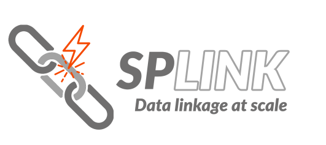
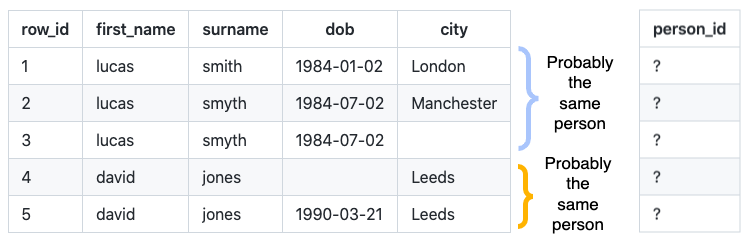
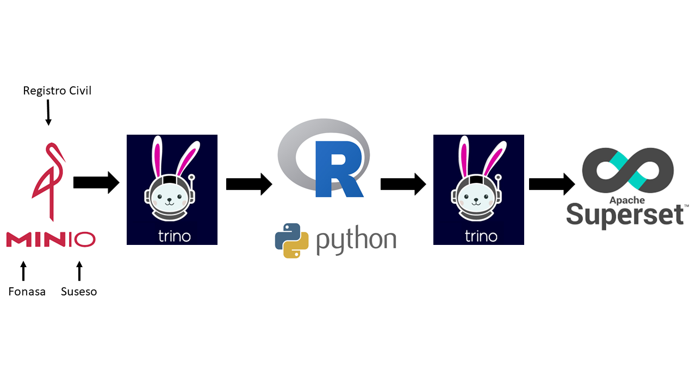

REP y la explotación de RRAA para su uso estadístico a partir de un lago de datos
Abril 2024
Temas:
Objetivos del Registro Estadístico de Población (REP)
Estrategia y procesamiento de las bases
Próximos pasos
Demo
Preguntas y/o comentarios
Objetivos del REP
El Registro Estadístico de Población (REP) busca compilar datos de la población permitiendo su conteo, localización y caracterización demográfica básica.
Se construye a partir de datos provenientes de registros administrativos (RRAA), tomando en cuenta el procesamiento necesario de dichas fuentes de información para su uso estadístico.
Busca complementar la información proveniente de censos y encuestas.
En el largo plazo, el objetivo es reemplazar al censo
Estrategia y procesamiento de las bases
Contamos con tres RRAA como fuentes de información:
Servicio de Registro Civil e Identificación (SRCeI): contiene todos los registros de personas que han sacado un documento de identificación.
Fondo Nacional de Salud (FONASA): contiene información sobre los beneficiarios de la salud pública.
Superintendencia de Seguridad Social (SUSESO): contiene el detalle de los antecedentes generales de todos los trabajadores cubiertos por la Superintendencia
El acceso a RRAA nominados nos permite hacer la vinculación determinística de estas bases utilizando el RUN de las personas.
Estrategia y procesamiento de las bases
Estrategia
Mayor desafío: volúmen de los datos
Estrategia: Apache Arrow
Es una plataforma de desarrollo para análisis en memoria.
Proporciona un formato de memoria columnar estandarizado para compartir datos de manera eficiente y realizar análisis rápidos.
Utiliza un enfoque agnóstico al lenguaje, lo que elimina la necesidad de convertir los datos a un formato específico para diferentes lenguajes de programación, mejorando así el rendimiento y la interoperabilidad entre sistemas y procesos de datos complejos.
Limitaciones:
Escasa variedad de funciones disponibles para usar en R.
Computacionalmente sigue siendo muy costoso.
Estrategia y procesamiento de las bases
Procesamiento
Primera etapa: descarga
Segunda etapa: exploración y cálculo de indicadores de calidad.
Tasa de completitud
Tasa de valores atípicos
Proporción de registros duplicados
Validaciones del RUT
Tercera etapa: limpieza y procesamiento de las bases.
Corrección de fechas.
Homologación de variables.
Normalización de nombres.
Remover valores atípicos y runes inválidos.
Deduplicación
Estrategia y procesamiento de las bases
Procesamiento
Cuarta etapa: vinculación determinística mediante el RUT.
96,3% de los registros de SUSESO hicieron match.
95,1% de los registros en FONASA hicieron match.
70% de los registros que hicieron match comparten el nombre con el Registro Civil.
Quinta etapa: integración de los registros que no hicieron match en el paso anterior.
Sexta etapa: contabilización y caracterización final de personas.
Próximos pasos
Integrar más registros administrativos.
Perfeccionar la identificación de a quienes sumar y a quienes restar (por ejemplo identificación de residentes usando señales de vida).
Desarrollo y pruebas de vinculación probabilística utilizando el paquete SPLINK.
Paquete de Python para vinculación probabilística de registros.
Permite deduplicar y vincular millones de registros.
Cacula la probabilidad de que dos registros aleatorios sean iguales.


Próximos pasos
Lago de datos
Objetivo a corto plazo: pasar la base de datos final a MinIO y hacer consultas mediante Trino desde la tabla virtualizada

Demo usando Minio/Trino
Preguntas y/o comentarios
REP y la explotación de RRAA para su uso estadístico a partir de un lago de datos